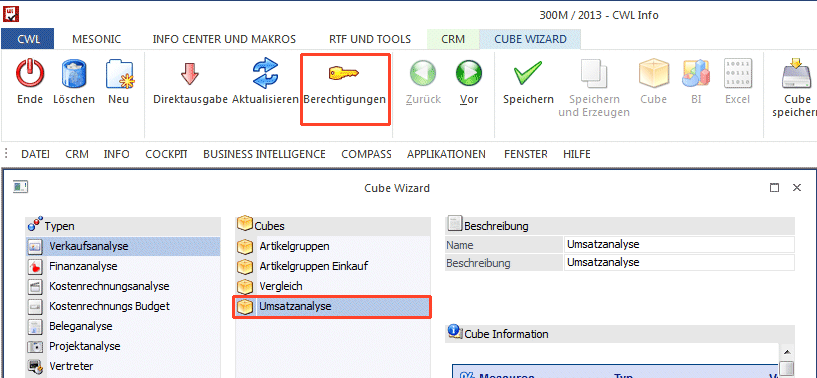
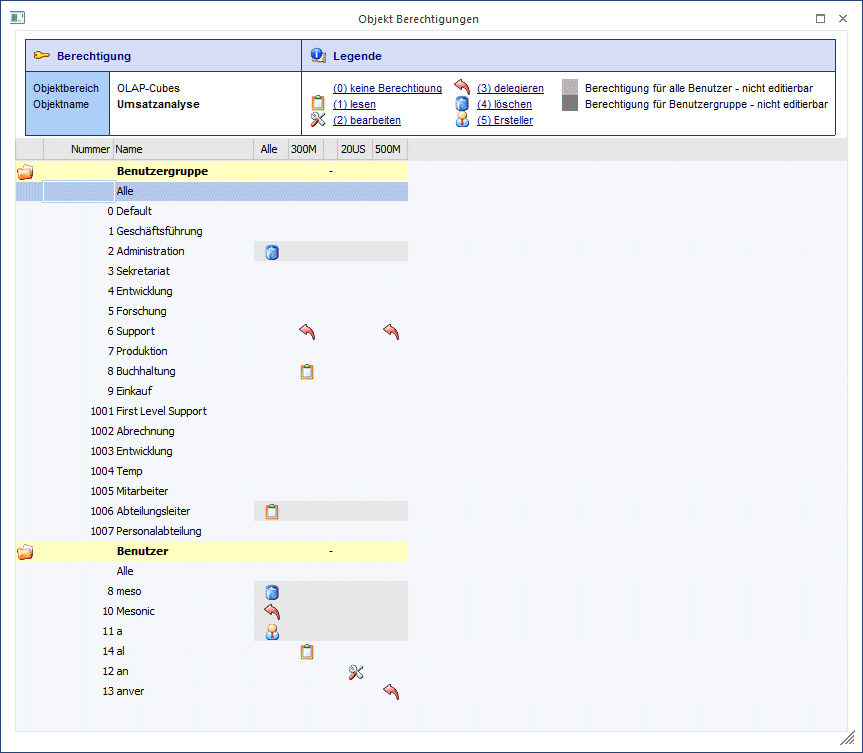
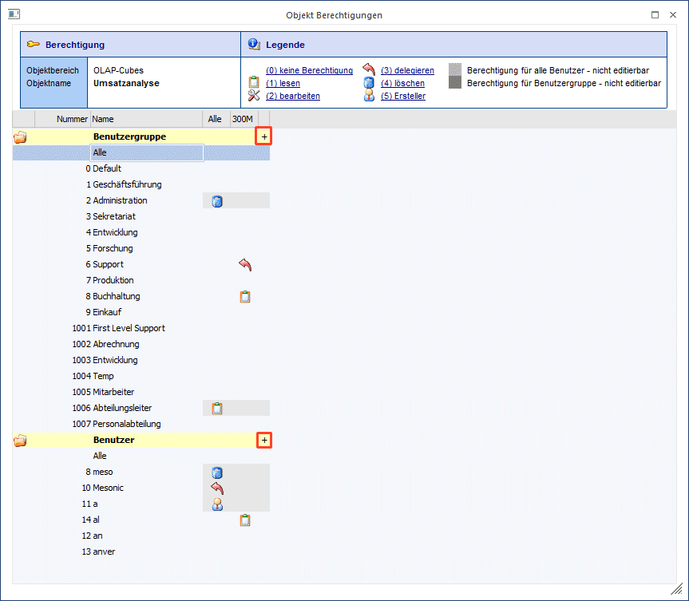
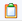
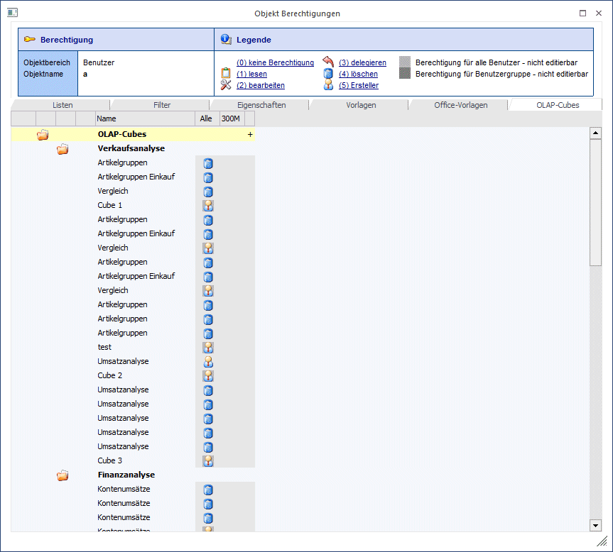
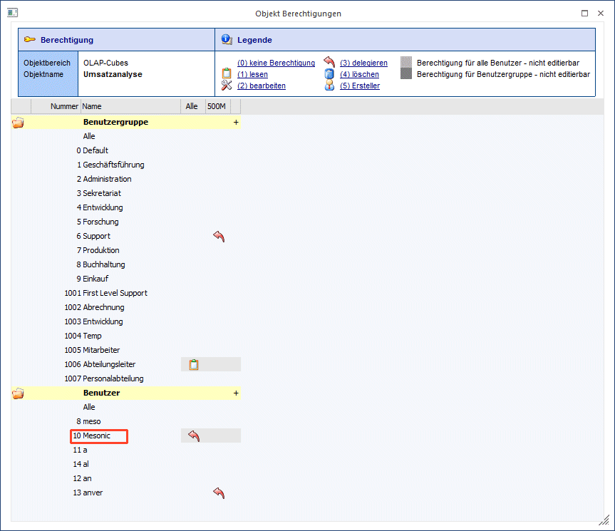

Die Objektberechtigungen sind die optimale Funktion, um bestimmte Auswertungen (Listen, Cubes), Vorlagen, Filter und Eigenschaften bestimmten Benutzern zur Verfügung zu stellen beziehungsweise auszublenden.
Dabei kann nicht nur die Zurverfügungstellung geregelt werden, sondern auch was der einzelne Benutzer damit machen darf. So kann zum Beispiel auf Grund der Objektberechtigung ein Benutzer zwar eine Listauswertung auswerten, darf aber an deren Definition nichts verändern (Objektberechtigung "Lesen"). In den jeweiligen Stamm-Fenstern der Objekte werden die Buttons je nach Berechtigung ausgegraut oder freigeschalten.
Diese Objektberechtigung kann auf Benutzerebene und/oder auf Benutzergruppenebene vergeben werden. Außerdem kann unterschieden werden, ob die Berechtigung nur für bestimmte Mandanten oder allgemein gilt.
Der große Vorteil der Objektberechtigungen ist, dass jetzt Filter, bestimmte Auswertungen (WinLine LIST und OLAP), etc. genau jenen Benutzern bzw. Benutzergruppen zur Verfügung gestellt werden können, die diese auch wirklich benötigen. Außerdem kann durch die Zuordnung zu einem bestimmten Mandanten vermieden werden, dass z.B. Filter die für einen bestimmten Mandanten erstellt wurden bei einem falschen Mandanten ausgewählt werden.
Die Objektberechtigungen können in folgenden Bereichen (Objekten) vergeben werden:
ü Listen
ü Filter
ü Eigenschaften
ü Vorlagen
ü Office Vorlagen
ü OLAP-Cubes
ü LOHN-Reports
ü Cockpits
Die Berechtigungen werden mittels "Berechtigungen" Button aufgerufen und zwar für jenes Objekt, auf das der Fokus zu diesem Zeitpunkt gerichtet ist.

Hinweis
Für Vorlagen steht zusätzlich zum Button "Berechtigungen" der Button "Berechtigungen - Allgemeine Vorlage" zur Verfügung. Mit diesem Button kann das Objektberechtigungsfenster zu den Allgemeinen Stammdatenvorlagen geöffnet werden.
Es öffnet sich dann das Fenster "Objekt Berechtigungen", wo die bereits vorhandenen Berechtigungen angezeigt werden bzw. neue Berechtigungen vergeben oder entfernt werden können.

Es wird im Berechtigungsfenster zuerst immer nur der aktuelle Mandant angezeigt. Zusätzliche Mandanten können durch Doppelklick auf das "+"-Zeichen eingeblendet werden.

Welche Berechtigungen können vergeben werden?
Es wird unter sechs verschiedenen Berechtigungstypen unterschieden:
Ø Keine Berechtigung
Objekte, für die der Benutzer bzw. die Benutzergruppe keine Berechtigung hat, werden grundsätzlich nicht angezeigt und können aus diesem Grund nicht ausgewählt werden.
Ø

Lese - Berechtigung (1)Diese Objekte werden angezeigt und dürfen verwendet werden.
Ø Bearbeiten - Berechtigung (2)
Benutzer bzw. Benutzergruppen dürfen diese Objekte verändern.
Ø Delegieren - Berechtigung (3)
Mit dieser Berechtigung können Objekte weitergegeben werden. Zusätzlich ist es ab dieser Berechtigung möglich in das Berechtigungsfenster zu gelangen und dort weitere Berechtigungen zu vergeben.
Ø Löschen - Berechtigung (4)
Mit dieser Berechtigung können Objekte gelöscht werden.
Ø Ersteller - Berechtigung (5)
Es kann nur genau einen Ersteller für ein Objekt existieren. Dieser kann ein Benutzer bzw. eine Benutzergruppe sein. Der "Alle-Benutzer" bzw. die "Alle-Benutzergruppe" ist auch nur genau ein Berechtigter. Der Ersteller kann nur für alle Mandanten vergeben werden.
Hinweis 1
Die Berechtigungsstufen sind so zu sehen, dass ein Benutzer mit der Objektberechtigung "Löschen" auch die darunterliegenden Berechtigungen besitzt (delegieren, bearbeiten und lesen).
Derjenige der die Auswertung, Vorlage, Filter, etc. erstellt, erhält die "Erstellerrechte". Der Ersteller kann die weiteren Berechtigungen nach Belieben auf andere Benutzer und Benutzergruppen verteilen. Pro Objekt kann maximal ein "Ersteller" zugeordnet werden.
Hat ein Benutzer eine Berechtigung zu einem Objekt erhalten, so kann dieser die Berechtigungen auch an andere Benutzer verteilen. Dies ist ab der Stufe 3 "Delegation" möglich. Ein Benutzer kann nur jene Berechtigung vergeben, die auch er besitzt bzw. Berechtigungen die darunter liegen.
Beispiel
Der Benutzer "Mesonic" hat in einer Vorlage die Objektberechtigung 3 "delegieren". Er ist somit autorisiert die Berechtigungen der Stufen delegieren, bearbeiten und lesen auf andere Benutzer zu übertragen.
Administratoren (WinLine Administratoren und Berechtigungsadministratoren) haben immer Zugriff auf das Berechtigungsfenster.
Hinweis 2
Vorlagenadministratoren haben immer Zugriff auf das Berechtigungsfenster aller Vorlagen.
Wie können Berechtigungen vergeben werden?
Berechtigungen können durch:
¨ einen Doppelklick in der Tabelle,
¨ über das Kontextmenü in der Tabelle,
¨ Eingabe der Berechtigungsziffer (0-5) oder über einen
¨ Klick auf einen Link in der Legende
gesetzt werden.
Benutzer und Benutzergruppenansicht
Mit einem Doppelklick auf den Benutzer bzw. die Benutzergruppe gelangt man in die "Benutzer"- bzw. "Benutzergruppen"-Ansicht. In dieser Ansicht werden alle Objekte (unterteilt in einzelne Register) für den jeweiligen Benutzer bzw. Benutzergruppe dargestellt.
Beispiel Benutzer

Wer sieht welche Berechtigungen?
Im Berechtigungsfenster werden nur die Berechtigungen angezeigt, welche der jeweilige Benutzer für dieses Objekt selbst hat und die niederwertigeren.
Beispiel
Der Benutzer "Mesonic" hat die Objektberechtigung "Delegation". Wenn der Benutzer "Mesonic" nun das Berechtigungsvergabe Fenster öffnet, so sieht dieser alle anderen zugeordneten Berechtigungen ab der Stufe "delegieren" und die darunterliegenden (bearbeiten, lesen).

Hinweis zu den Standard (von mesonic zur Verfügung gestellte) Listen, Vorlagen und Filter:
Es kann für diese Objekte keine höhere Objektberechtigung als "Lesen" vergeben werden. Das heißt, Administratoren können entscheiden, ob das Objekt angezeigt (lesen) oder nicht angezeigt werden soll (keine Berechtigung). Die weiteren Berechtigungsoptionen "bearbeiten", "delegieren", "löschen" und "Ersteller" stehen hierbei nicht zur Verfügung.
Legende
Ø Berechtigung für alle Benutzer - nicht editierbar
Wurde dem Benutzer "Alle" eine Berechtigung zugeteilt, so gilt diese auch für den einzelnen Benutzer. Wird nun für den Benutzer die "Detailansicht" der Berechtigungen geöffnet, so werden die Objektberechtigungen die der Benutzer durch den Benutzer "Alle" erhalten hat in dem in einem in der Legende angeführten dunklen Grauton hinterlegt. Diese Berechtigungen können in dieser Ansicht nicht editiert werden. Dies ist nur möglich, wenn man in die Benutzer- bzw. Benutzergruppenansicht wechselt.
Ø Berechtigung für alle Benutzergruppe nicht editierbar
Wurde einer Benutzergruppe eine Berechtigung zugeteilt, so gilt diese auch für den einzelnen Benutzer der dieser Gruppe angehört. Wird nun für den Benutzer die "Detailansicht" der Berechtigungen geöffnet, so werden die Objektberechtigungen, die der Benutzer durch die Benutzergruppe erhalten hat in dem in der Legende angeführten dunklen Grauton hinterlegt. Diese Berechtigungen können in dieser Ansicht nicht editiert werden. Dies ist nur möglich, wenn man in die Benutzer- bzw. Benutzergruppenansicht wechselt
Buttons
Ø Ok
Mit dem Ok Button werden die Änderungen in den Objektberechtigungen gespeichert.
Ø Ende
Mittels Ende Button oder ESC wird das Objektberechtigungenfenster geschlossen und etwaige Änderungen verworfen.
Ø Gruppen-Information
Ist das Berechtigungsfenster geöffnet, so kann der Button "Gruppen Information" aktiviert werden. Sobald dieser Button aktiv ist, wird im linken Bereich des Berechtigungsfensters ein zusätzlicher Bereich angezeigt, wo ersichtlich ist, welche Benutzer der jeweiligen Benutzergruppe zugeordnet sind. Es wird immer zu jener Benutzergruppe die Gruppen-Information angezeigt auf zu diesem Zeitpunkt der Fokus gesetzt ist.